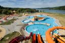

Pécsi-tó
| Kialakulása: | duzzasztás |
| Vízfelszín: | 70 hektár |
| Vízmélység: | 2-3 méter |
| Itt található: |
 Orfű, Mecsek
Orfű, Mecsek
Baranya megye |
Nevével ellentétben nem Pécsen, hanem Orfűn található. Nem keverendő össze az Orfűi tóval - az ugyanis Orfű másik, lényegesen kisebb tava -, melyek további tavakkal együtt összefüggő tórendszert alkotnak.
A Pécsi-tó Baranya megye legnagyobb vízfelülettel rendelkező tava, országosan kedvelt üdülőterület. Csak néhány lehetőség a tó és a környék kínálatából: szabadstrand, kajakbérlés, sárkányhajózás, élményfürdő, kerékpárbérlés, horgászás, lovaglás, túrázás, barlangászás, fesztiválok... A környékén változatos szálláslehetőségek teremtenek lehetőséget akár hosszabb itteni nyaralásra is. Pécs, illetve a Mecsek közelsége tovább színesíti a régió gazdag programkínálatát.




Kapcsolódó linkek: